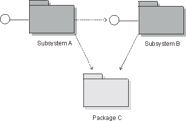

Artifacts >
Artifacts >
 Analysis & Design Artifact Set >
Analysis & Design Artifact Set >
 Design Model... >
Design Model... >
 Design Subsystem >
Design Subsystem >
 Guidelines
Guidelines
Artifacts >
Analysis & Design Artifact Set >
Design Model... >
Design Subsystem >
Guidelines
Guidelines:
|
|
Details |
| Look for optionality | If a particular collaboration (or sub-collaboration) represents optional behavior, enclose it in a subsystem. Features which may be removed, upgraded, or replaced with alternatives should be considered independent. |
| Look to the user interface of the system. | If the user interface is relatively independent of the entity classes in the system (i.e. the two can and will change independently), create subsystems which are horizontally integrated: group related user interface boundary classes together in a subsystem, and group related entity classes together in another subsystem. |
| If the user interface and the entity classes it displays are tightly coupled (i.e. a change in one triggers a change in the other), create subsystems which are vertically integrated: enclose related boundary and entity classes in common subsystem. | |
| Look to the Actors | Separate functionality used by two different actors, since each actor may independently change their requirements on the system. |
| Look for coupling and cohesion between classes | Highly coupled or cohesive classes collaborate to provide some set of services. Organize highly coupled classes into subsystems, separating classes along lines of weak coupling. In some cases, weak coupling can be eliminated entirely by splitting classes into smaller classes with more cohesive responsibilities. |
| Look at substitution | If there are several levels of service specified for a particular capability (example: high, medium and low availability), represent each service level as a separate subsystem, each of which will realize the same set of interfaces. By doing so, the subsystems are substitutable for one another. |
| Look at distribution | Although there can be multiple instances of a particular subsystem, each executing on different nodes, in many architectures it is not possible for a single instance of a component to be split across nodes. In the cases where subsystem behavior must be split across nodes, it is recommended that you decompose the subsystem into smaller subsystems (each representing a single component) with more restricted functionality. Determine the functionality that must reside upon each node and create a new subsystem to ‘own’ that functionality, distributing the responsibilities and related elements of the original subsystem appropriately. The new subsystems are internal to the original subsystem. |
Once classes have been organized into subsystems, update the use-case realizations accordingly.
Once the subsystem has been created:
Components are implementation things; to represent the component in the design, a subsystem can be used as a proxy for the component.
To this end, Design Subsystems provide an ideal way to represent components in the Design Model: they are design elements which encapsulate the behavior of a number of classes (as components encapsulate the behavior of a number of class instances), and their behavior is only accessed via the interfaces they realize (as is the case with components).
Where an existing product is one that exports interfaces, i.e. operations (and perhaps receptions), but otherwise keeps all details of implementation hidden, then it may be modeled as a subsystem in the logical view. Examples of products the system uses that you may be able to represent by a subsystem include:
Some existing products such as collections of types and data structures (e.g. stacks, lists, queues) may be better represented as packages, because they reveal more than behavior, and it is the particular contents of the package that are important and useful and not the package itself, which is simply a container.
Common utilities, such as math libraries, could be represented as subsystems, if they simply export interfaces, but whether this is necessary or makes sense depends on the designer's judgment about the nature of the thing modeled. Subsystems are object-oriented constructs that are classifiers as well as packages: a subsystem can have instances (if the designer so indicates). UML provides another way to model groups of global variables and procedures in the utility, which is a stereotype of class - the utility has no instances.
When defining the subsystem to represent the product, also define one or more interfaces to represent the product interfaces.
Subsystems differ from packages in their semantics: a subsystem is a kind of package which provides behavior through one or more interfaces which it realizes. Packages provide no behavior; they are simply containers of things which provide behavior.
The reason for using a subsystem instead of a package is that subsystems completely encapsulate their contents, providing behavior only through their interfaces. The benefit of this is that, unlike a package, the contents and internal behaviors of a subsystem can change with complete freedom so long as the subsystem's interfaces remain constant. Subsystems also provide a 'replaceable design' element: any two subsystems (or classes, for that matter) which realize the same interfaces are interchangeable.
In order to ensure that subsystems are replaceable elements in the model, a few rules need to be enforced:
An example of Subsystem and Package dependencies is shown below:

Subsystem and Package Dependencies in the Design Model
|
Rational Unified
Process
|